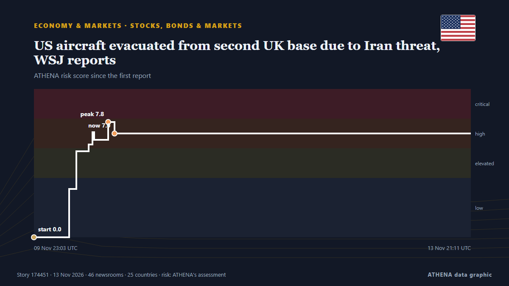

ATHENA Glaux Intelligence — Παγκόσμια ειδησεογραφική ανάλυση — κάθε αριθμός εξηγημένος
Κάθε είδηση, ελεγμένη σε πολλές χώρες.
Το ATHENA Glaux παρακολουθεί 630 ειδησεογραφικά μέσα σε όλο τον κόσμο. Μια είδηση γίνεται επαληθευμένο γεγονός μόνο όταν την αναφέρουν ανεξάρτητα μέσα. Κάθε γεγονός δείχνει ποιος το ανέφερε πρώτος και έναν βαθμό κινδύνου με τους λόγους του.
Αναφορές έρχονται από ανεξάρτητα μέσα — όταν δύο συναντηθούν στην ίδια ιστορία, γίνεται επιβεβαιωμένο γεγονός.
Τρεις τρόποι να διαβάσετε σήμερα
Ξεκινήστε από αυτόν που ταιριάζει στον χρόνο σαςΕπαληθευμένα γεγονότα
Κατά σειρά έκτασης της κάλυψης
- Oil tanker catches fire after hitting naval mine in Hormuz, Iran says51 μέσα · 30 χώρεςΚίνδυνος 3.0
- US envoys Witkoff and Kushner arrive at Kremlin62 μέσα · 29 χώρεςΚίνδυνος 5.5
- Κίνδυνος 6.6
- Scott Colom, a Democrat, wins Mississippi Senate seat in historic upset47 μέσα · 26 χώρεςΚίνδυνος 4.2
- Κίνδυνος 5.0
Γραφείο Ανάλυσης
Κάντε μια ερώτηση και διαβάστε τεκμηριωμένη αξιολόγηση μιας βασικής είδησης, μαζί με το τι θα την διέψευδε.
Ανοίξτε το Γραφείο Ανάλυσης ›Πώς ελέγχει το ATHENA μια είδηση
- ΣυλλογήΟι αναφορές φτάνουν από ανεξάρτητα μέσα σε πολλές χώρες.
- ΑντιστοίχισηΌταν δύο μέσα συναντιούνται στην ίδια είδηση, γίνεται επαληθευμένο γεγονός.
- ΕξήγησηΚάθε γεγονός δείχνει ποιος ήταν πρώτος, πόσο εξαπλώθηκε και γιατί ο κίνδυνος είναι αυτός.

Οικονομία & ΑγορέςUS aircraft evacuated from second UK base due to Iran threat, WSJ reports
US military aircraft were evacuated from a second UK base due to threats from Iran. από Arab News
Οι τίτλοι των ειδήσεων παρουσιάζονται στα αγγλικά, όπως δημοσιεύτηκαν.
Scott Colom, a Democrat, wins Mississippi Senate seat in historic upset
On “Forbes Newsroom,” NAACP President Derrick Johnson discussed the still-unresolved Mississippi Senate race in which Democrat Scott Colom is up by about 2500 against Rpublican incumbent Cindy… από Forbes Business
Tanker capsizes cruise boat carrying 129 passengers on Mississippi River
Rescue efforts are in progress after a tanker collided with a river cruise boat on the Mississippi River, causing the boat to partially submerge. από Arab News

Two more offending oil tankers catch fire east of Strait of Hormuz: Iran Army
"One of the vessels is a supertanker; it is currently engulfed in flames following a powerful explosion," the Iranian Revolutionary Guard Corps (IRGC) Navy spokesperson said. από The Jerusalem Post
Russian ambassador to US Alexander Darchiev dies suddenly at 66
The announcement called Darchiev ‘an outstanding diplomat, an experienced leader, a kind friend, and a mentor’ από The Independent
Former Nvidia CEO Huang had a relationship with a second employee, sources say
Oliver Farry is pleased to welcome Bernard Benhamou, Secretary General of France's Institute of Digital Sovereignty. από France 24 English
Γεωπολιτική, Πολιτική & Ασφάλεια
Περισσότερα ›Lula lands in Philippines; Brazil seeks to be ASEAN Dialogue Partner
Our experts unpack what Lula’s victory means for Brazil’s ties with Washington and how it could reshape a region trending right. από Atlantic Council
- Συμμαχίες & συνθήκες
Turkish parliament approves Mecca defense pact with Pakistan and Saudi Arabia
- Διπλωματία & σύνοδοι
EU institutions, E5 to represent Europe in Ukraine peace talks
- Πόλεμοι & συγκρούσεις
Ceasefire to be EU’s priority at Ukraine talks — von der Leyen
- Διπλωματία & σύνοδοι
Armenia Stays Out Of European Security Declaration At Dublin Summit
Οικονομία, Χρηματοοικονομικά & Αγορές
Περισσότερα ›US Treasury bought yen in July, its first intervention since 1998, as yen nears 160 again
The report confirms that the US is a willing partner in yen support, not just a bystander. από investingLive (ForexLive)
- Κατοικία & ακίνητα
Europe’s Housing Affordability Gap Widens, With Greece Among the Hardest Hit
- Κρυπτονομίσματα & ψηφιακά στοιχεία
US obtains court approval to seize, restrain over $1.2 bil. stolen in NK Binance theft
- Πληθωρισμός & επιτόκια
EUR/USD Weekly Forecast: Hawkish Fed likely to push the US Dollar even higher
- Χρέος & προϋπολογισμοί
Greek tax return declarations 2025: Incomes rose by €9.85billionn, two thirds of self-employed workers earning under €10,000
Εμπόριο, Βιομηχανία & Υποδομές
Περισσότερα ›US Flight Shutdown Live Updates: 'This Isn't Another 9/11' - US After All Domestic Flights Grounded
The Federal Aviation Administration "issued a nationwide ground stop for all US airports following a communication issue impacting all Air Route Traffic Control Centers," the agency said. από NDTV
- Αερομεταφορές, σιδηρόδρομος & οδικές
FAA issues nationwide ground stop for all U.S. airports
- Εμπόριο & εμπορικές συμφωνίες
Iraq turns to trucks to export oil in overland Syrian route revival
- Ναυτιλία & λιμάνια
HHLA container handling falls 7.3% in January-September 2026
- Μεταποίηση
Mercedes-Benz halts investment in Germany, considers shutting factories: Report
Ενέργεια, Πόροι & Περιβάλλον
Περισσότερα ›Pakistan-Sri Lanka First Test Ends in a Draw
Pakistan declared at 261/7, with Saud Shakeel unbeaten on 81. από News of Bahrain
- Κλίμα & κλιματική πολιτική
Climate Finance Dominates COP31 Talks Amid Concerns Over Afghanistan’s Absence
- Πυρηνική ενέργεια
Nuclear watchdog increasingly concerned about Iranian enrichment plant
- Πετρέλαιο & φυσικό αέριο
Norway's top court rules oil licenses invalid in landmark ruling
- Ηλεκτρική ενέργεια
EU outlines ‘winter’ assistance for Ukraine
Τεχνολογία, ΤΝ & Κυβερνοασφάλεια
Περισσότερα ›SpaceX to attempt first Starship spacecraft recovery on land in 15th flight
Starship's 15th flight will test the rocket and deploy Starlink satellites, generating revenue for SpaceX. από Express Tribune
- Λογισμικό & cloud
Microsoft global outage: Services gradually restored in Europe after hours of disruption across 70 countries
- Λογισμικό & cloud
Microsoft 365 outage hits Outlook, other services: What tech giant has said so far
- Επεξεργαστές & υπολογιστική
Nvidia is done with Jensen Huang. The fallout in Washington is just beginning
- Επεξεργαστές & υπολογιστική
Jensen Huang, US Commerce Secretary Lutnick summoned to testify on Capitol Hill in push for Nvidia inquiry
Επιχειρήσεις, Εταιρείες & Επενδύσεις
Περισσότερα ›Jensen Huang Will Brief Lawmakers On Affair With Alleged Chinese Spy, Report Says
President Donald Trump was briefed about a year ago about those intelligence findings, The New York Times reported. από CNBC World
- Ανταγωνισμός
Family Dollar will pay $63M to settle unfair-pricing claims from state, federal regulators
- Εταιρική στρατηγική
Nvidia approached Arm CEO Haas to succeed Huang, FT reports
- Εταιρική στρατηγική
Jensen Huang resigns as NVIDIA CEO, Colette Kress takes over
- Εταιρική στρατηγική
Congress Summons Ex-Nvidia CEO Jensen Huang, Lutnick Over Chip Exports to China
Η σημερινή εικόνα
| 01:00 | 322 |
|---|---|
| 02:00 | 335 |
| 03:00 | 443 |
| 04:00 | 415 |
| 05:00 | 612 |
| 06:00 | 255 |
| 07:00 | 371 |
| 08:00 | 643 |
| 09:00 | 613 |
| 10:00 | 573 |
| 11:00 | 656 |
| 12:00 | 430 |
| 13:00 | 716 |
| 14:00 | 910 |
| 15:00 | 455 |
| 16:00 | 508 |
| 17:00 | 469 |
| 18:00 | 619 |
| 19:00 | 418 |
| 20:00 | 602 |
| 21:00 | 474 |
| 22:00 | 487 |
| 23:00 | 393 |
| 00:00 | 444 |
Κίνδυνος των σημερινών γεγονότων
Με την ευρύτερη κάλυψη
Αναδυόμενα σήματα
- Νέο όνομα στις ειδήσεις · Ενεργό τώραTurkey and Qatar
- Απότομη αύξηση · Ενεργό τώραTeams
- Απότομη αύξηση · Ενεργό τώραFAA
- Απότομη αύξηση · Ενεργό τώραMicrosoft
- Απότομη αύξηση · Ενεργό τώραSirik
Το ATHENA στο Telegram
Μπείτε δωρεάν στην ομάδα ATHENA Glaux και λάβετε τις ειδήσεις τη στιγμή που δημοσιεύονται εδώ:
- έκτακτα γεγονότα με κίνδυνο 6 ή περισσότερο
- ωριαία σύνοψη των κορυφαίων γεγονότων
- ενημερώσεις των παρακολουθήσεων κινδύνου (Ορμούζ, Ερυθρά Θάλασσα, Ταϊβάν, κυρώσεις κ.ά.)
- την ημερήσια ενημέρωση κάθε πρωί στις 10:00 (ώρα Ελλάδας)
- εβδομαδιαία προοπτική
- επίσημες προειδοποιήσεις, αναδυόμενα σήματα και κινδύνους σε άνοδο
Πατήστε το κουμπί, ανοίγει το Telegram, πατήστε «Join». Οι αναρτήσεις είναι στα αγγλικά· μπορείτε να τη σιγάσετε ή να αποχωρήσετε όποτε θέλετε. Δεν έχετε Telegram; Είναι δωρεάν στο telegram.org.
Παρακολούθηση κινδύνων
Περισσότερα ›Παγκόσμιοι κίνδυνοι — εβδομάδα 46, 2026 (9–15 Νοε) ›